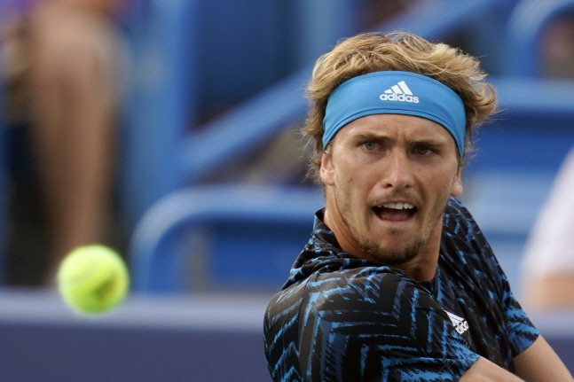

2020 도쿄올림픽 남자단식 금메달리스트인 알렉산더 츠베레프(24·독일).
세계랭킹 5위인 그가 다시한번 우승트로피를 들어올리며 포효했다.
츠베레프는 22일(현지시간) 미국 신시내티의 하드코트에서 열린 2021 웨스턴 & 서던오픈(ATP 마스터스 1000 시리즈) 남자단식 결승전에서 7위 안드레이 루블레프(24·러시아)를 59분 만에 2-0(6-2, 6-3)으로 완파하고 우승했다.
전날 4강전에서 세계 3위 스테파노스 치치파스(23·그리스)와 2시간42분 동안의 풀세트 접전 끝에 2-1(6-4, 3-6, 7-6, 7-4) 승리를 거뒀던 츠베레프는 여세를 몰아 루블레프까지 무너뜨렸다.
4강전에서 세계 2위 다닐 메드베데프(25·러시아)에게 2-1(2-6, 6-3, 6-3)로 역전승을 거둔 루블레프였지만 힘을 쓰지 못했다.
1m98 장신인 츠베레프는 이날 서브에이스 11개(루블레프는 6개)를 꽂아넣었다. 루블레프는 더블폴트를 4개나 범하는 등 컨디션 난조를 보이며 무너졌다.